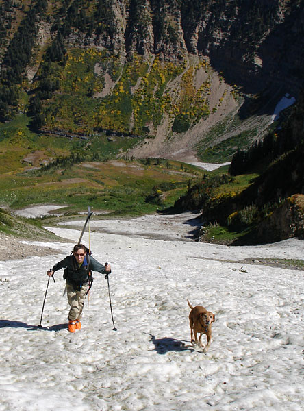

2005/2006 2004/2005 2003/2004 2002/2003 |
September 25th, 2005 The last of 12 months of skiing: Finale on Mt.
Timpanogos.

We skied 3 runs on the rock studded snow patch, favoring a partly white section that provided about 400 vertical feet of land mine hopping action. At the end of the third run I took my skis off for the last time of "the year". I was tired. Switching back to running shoes and stowing my boots was difficult. The energy dropped, but the euphoria rose. 12 months. Hundreds of different lines. Dozens of quality accomplices. A handful of different mountain ranges. And countless people wondering why I was hiking with skis on my back in the middle of the summer. But I felt justified. Each experience was self powered, self plotted, and unique. I had never really thought beyond the sillyness of the task, but upon it's completion, I felt an amazing sense of accomplishment. The hike from 9,000 ft. back to the trailhead seemed effortless, as if the whole year was one huge hike, one 100,000 vertical trek, and now I had just one last mile to go. I floated down, hands in pockets, soaring over the rocky switchbacks and open meadows, my pack incredibly light, my stride long. It was a questionable journey that I had first dreamed of over a decade ago, and I'd finally finished it. I was satisified. Righteous. Ready to gloat. At home, I walked into the kitchen like an olympian, arms reaching for the ceiling, shredded, dirt caked skis in one hand, filthy, tattered backpack in the other. I might have said something like "I am a year round skiing stud" or some other mantra to that effect. My roomate was obviously impressed, though I don't think his eyes left the computer. I checked my voice mail. First message was from Powder Princess, eagerly requesting a full report on the trip. It was sad that she couldn't have been there, but excellent to hear her support and excitement. Second message was The Swindler. He had called at 11:00 AM saying, "well, I figured that you'd given up on your totally lame ski adventure by now and would probably be up for a bike ride. Call me. " I fell asleep laughing. The Beta on Year
Round Skiing But, if you can manage to break the spell of summer, as well as ignore your jeering friends, you'll find skiing in June and July to be one of the most summery things you can do. Then in August and September you'll find that your previous months investments of effort and ego can easily carry you the rest of the way through the year, to complete stardom, and beyond. For more info, check out this freaky year round forum based out of the PNW: Turns-All-Year
|